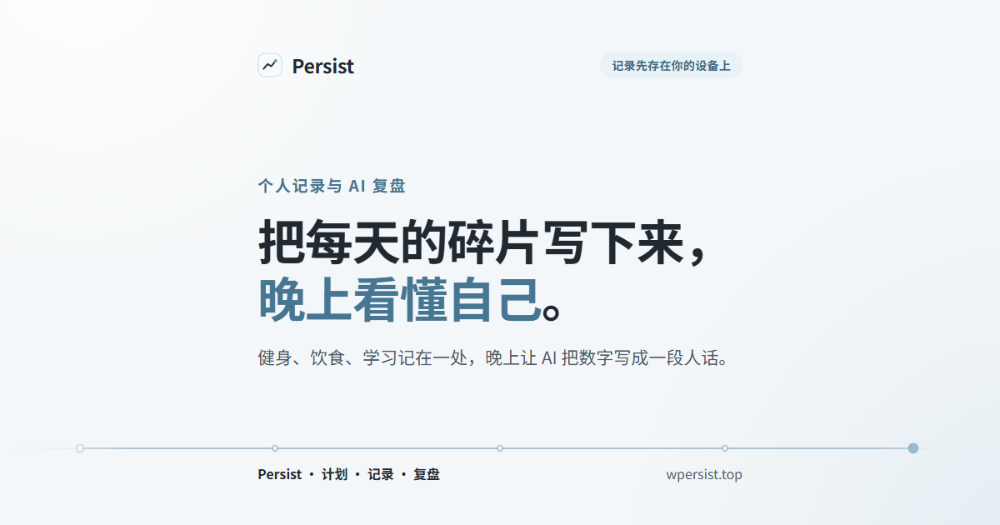
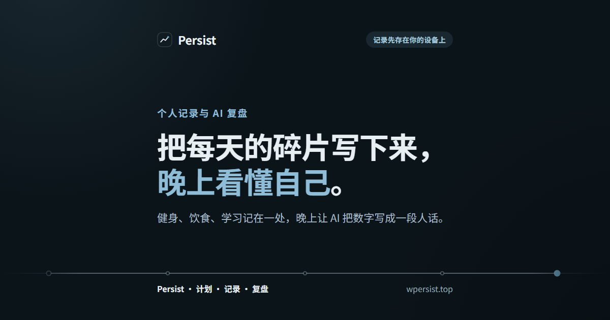
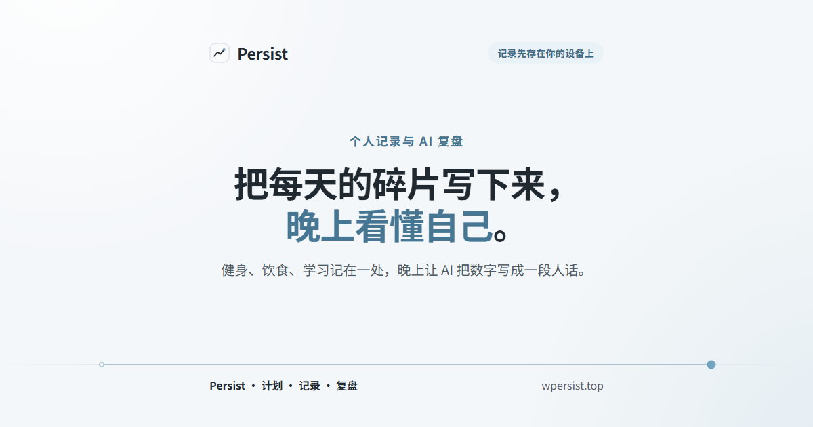
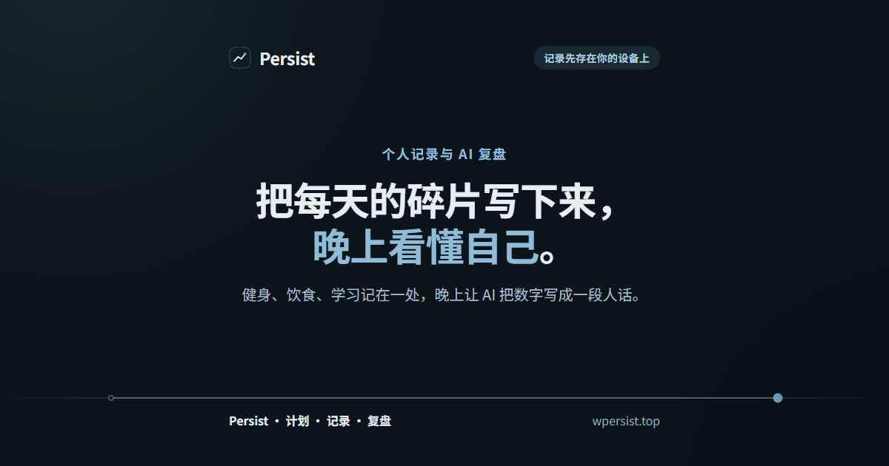

D:\Persist\landing\og\preview.html
社交分享卡（OG）本地预览
这一页就是「Persist 被分享到微信 / X / Facebook 时对方看到的那张卡片」。
卡面用的是 landing/assets/og-card.png——与生产服务器上
/var/www/persist/assets/og-card.png 逐字节一致的那一张，不是示意图。
当前状态
✅ 现在就能看到
卡面本身已定稿、已渲染、已部署生产（1200×630 / 44 459 B / PNG）。
本页与
landing/assets/og-card.png 显示的就是线上那一张。
⏳ 现在看不到（真实平台抓取）
微信 / X 的卡片由爬虫抓取
https://wpersist.top/assets/og-card.png 生成。
域名未解析、备案号未下发，爬虫物理上抓不到这张图——这与「页面本身也不该对外」是同一道闸门，属预期行为。
1 · 最终对外卡面

1b · 微信的 1:1 裁切实拍（当前卡面的真实弱点）
微信聊天列表里的方图
微信把 og:image 裁成 1:1 且取中心区域（横图会裁掉左右两边），
右边这张就是本卡面被裁后的真实样子。
当前是左文右线构图，主标题「同一天，看清自己。」落在 x=80 起， 而 630 宽的取景框从 x=285 开始 —— 标题被切掉大半，方图里只剩大片留白与右半段折线。 X / Facebook / LinkedIn 全宽显示时没有这个问题，只有微信会这样。
常见解法：把标题 / Logo 收进中心 630×630 安全区（上图红色虚线框），
或另出一张 1:1 方图专门给微信（微信只取 og:image 的第一张）。
这属于待你拍板的视觉决策，本轮没有擅自改卡面。
2 · 平台卡片模拟
微
微信 · 聊天窗口链接卡片
Persist · 同一天，看清自己
wpersist.top
缩略图按微信规则做了 1:1 中心裁切，所以方图里看不到主标题（见 §1b）。
卡片标题与描述由
og:title / og:description 提供，不依赖图里的字。
X
X (Twitter) · summary_large_image
Persist · 同一天，看清自己
把每一天记下来，让 AI 告诉你规律。在线演示的数据只留在你自己的浏览器里，不上传服务器。
wpersist.top
f
Facebook · 链接预览
Persist · 同一天，看清自己
把每一天记下来，让 AI 告诉你规律。在线演示的数据只留在你自己的浏览器里，不上传服务器。
W PERSIST.TOP
三种卡片共用同一张图与同一组文案：
og:title / og:description / og:image
一处改动，三个平台同时变，不存在「微信一套说法、X 另一套说法」。
3 · OG 元数据（两页一致）
| og:type | website |
|---|---|
| og:site_name | Persist |
| og:locale | zh_CN |
| og:title | Persist · 同一天，看清自己 |
| og:description | 把每一天记下来，让 AI 告诉你规律。在线演示的数据只留在你自己的浏览器里，不上传服务器。 |
| og:url | https://wpersist.top/ （介绍页为 /home.html） |
| og:image | https://wpersist.top/assets/og-card.png |
| og:image:type | image/png |
| og:image:width / height | 1200 / 630 |
| og:image:alt | Persist · 同一天，看清自己。健身、饮食、学习记在一处，晚上让 AI 把数字写成一段人话。 |
| twitter:card | summary_large_image |
| twitter:title / description / image | 与 og:* 同源 |
| canonical | https://wpersist.top/ （介绍页为 /home.html） |
| 备案号 | 卡面与 head 内均无备案编号 —— 尚未下发，绝不编造 |
4 · 四个变体对照

A × 浅色已选用
左文右线，线上版
左文右线，线上版

A × 深色备用
同一构图，深色底
同一构图，深色底

B × 浅色备用
居中构图，主标题过大
居中构图，主标题过大

B × 深色备用
居中构图，深色底
居中构图，深色底
选用 A × 浅色：A 的左文右线构图比 B 的居中构图平衡（B 的主标题字号过大、副标题在 22ch 宽度内换行难看）；
浅色在微信 / Twitter / Facebook 的默认卡片底色上更自然。改文案后重跑
node scripts/render-og-card.mjs，再把新图复制到 landing/assets/og-card.png。
5 · 怎么在真实平台验证
域名上线后（备案号下发当天），分享卡会立刻生效，不需要额外操作。可用：
- 微信里把
https://wpersist.top/粘进聊天框，看是否出现图文卡片； - 用第三方调试工具（opengraph.xyz 等）粘贴域名，查看爬虫实际抓到的
og:image； - 直接打开
https://wpersist.top/assets/og-card.png，应返回 200 /image/png。
node scripts/check-og-meta.mjs # 校验两页的 og/twitter 标签与卡面尺寸 node scripts/check-og-meta.mjs --url https://wpersist.top/ # 校验线上页面并 HEAD 图片（域名上线后用）改卡面后重渲染：
node scripts/render-og-card.mjs # 渲染 4 个变体到 landing/og/preview/ copy landing/og/preview/a-light.png landing/assets/og-card.png # 同步最终产物